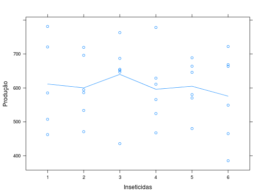

Dados de um ensaio de controle de insetos/pragas na
cultura do arroz. O experimento foi feito em delineamento
quadrado latino 6 \(\times\) 6 mas há uma um dado perdido
(linha 6, coluna 2). Esta observação recebeu o valor NA.
Um data.frame com 36 observações e 4 variáveis
linhacolunainsetprodZIMMERMANN (2004), Tabela 14.9, pág. 297.
Dados do mesmo experimento, referente à variável de contagem
número de perfilhos de arroz, estão disponíveis em
ZimmermannTb5.15.
library(lattice) data(ZimmermannTb14.9)#> Warning: data set ‘ZimmermannTb14.9’ not foundstr(ZimmermannTb14.9)#> 'data.frame': 36 obs. of 4 variables: #> $ linha : Factor w/ 6 levels "1","2","3","4",..: 1 2 3 4 5 6 1 2 3 4 ... #> $ coluna: Factor w/ 6 levels "1","2","3","4",..: 1 1 1 1 1 1 2 2 2 2 ... #> $ inset : Factor w/ 6 levels "1","2","3","4",..: 5 4 3 1 6 2 2 6 4 5 ... #> $ prod : num 570 468 687 508 385 ...# Indicadora de observação perdida/ausente. is.na(ZimmermannTb14.9$prod)#> [1] FALSE FALSE FALSE FALSE FALSE FALSE FALSE FALSE FALSE FALSE FALSE TRUE #> [13] FALSE FALSE FALSE FALSE FALSE FALSE FALSE FALSE FALSE FALSE FALSE FALSE #> [25] FALSE FALSE FALSE FALSE FALSE FALSE FALSE FALSE FALSE FALSE FALSE FALSElevelplot(prod ~ linha + coluna, data = ZimmermannTb14.9, aspect = "iso", panel = function(x, y, z, subscripts, ...) { panel.levelplot(x, y, z, subscripts = subscripts) panel.text(x, y, labels = ZimmermannTb14.9$inset[subscripts], pos = 3) panel.text(x, y, sprintf("%0.1f", z), pos = 1, col = is.na(z[subscripts]) + 1) })xyplot(prod ~ inset, data = na.omit(ZimmermannTb14.9), type = c("p", "a"), xlab = "Inseticidas", ylab = "Produção")